Verifiche di ribaltamento, scorrimento e portanza nei muri di sostegno
Tre meccanismi distinti
Un muro può essere sicuro a ribaltamento e critico a scorrimento o portanza. Le verifiche vanno lette separatamente.
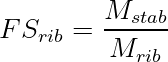
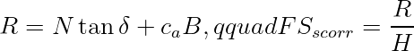
Pressioni di contatto.
Con eccentricità (e=M/N) e (|e|le B/6):

Esempio.
Con (N=420,mathrm{kN/m}), (B=3.0,mathrm{m}), (e=0.25,mathrm{m}):
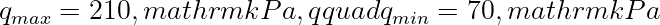
Riferimenti tecnici utilizzati:
- D.M. 17 gennaio 2018, NTC 2018, Capitolo 6.
- Circolare C.S.LL.PP. 21 gennaio 2019, n. 7.
- UNI EN 1997-1, Eurocodice 7: Progettazione geotecnica.
Nota StruHub.
StruHub mantiene separati i tre controlli perché ciascuno intercetta un modo di crisi diverso.
Eccentricità e nucleo centrale
La formula
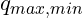
vale finché la risultante resta nel nucleo centrale. Per una base rettangolare di larghezza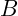
, la condizione è: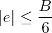
Se $|e|>B/6$, una parte della base va in decompressione e la distribuzione delle pressioni non è più lineare su tutta la larghezza.
Portanza e distribuzione delle pressioni
La verifica di portanza non dovrebbe confrontare solo una pressione media. Il valore
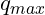
è spesso più rappresentativo della sollecitazione locale sul terreno:
Il controllo è particolarmente importante quando la risultante è eccentrica per effetto della spinta del terreno o del sisma.
Per le verifiche globali del muro, la lettura corretta parte dall'equilibrio tra spinta del terreno, peso proprio, eventuali sovraccarichi, acqua e risposta del piano di posa. Il muro non è solo un elemento in calcestruzzo: è il bordo rigido di un volume di terreno che tende a muoversi.
Spinte e pressione neutra
In condizioni semplici, la spinta attiva può essere rappresentata con il coefficiente di Rankine:
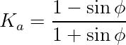
La pressione efficace orizzontale è:
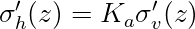
Se è presente acqua, la pressione neutra deve essere aggiunta come azione idraulica. Separare tensione efficace e pressione neutra evita di confondere resistenza del terreno e spinta dell'acqua.
Equilibrio alla base
La risultante verticale (N) e il momento alla base definiscono l'eccentricità :
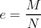
Se la risultante resta nel nucleo centrale, la distribuzione delle pressioni può essere letta con:
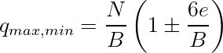
Esempio di controllo
Con (B=3.0\,\mathrm{m}), (N=450\,\mathrm{kN/m}) e (M=90\,\mathrm{kNm/m}):
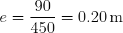
Poiché (B/6=0.50\,\mathrm{m}), la risultante resta nel nucleo centrale. Le pressioni sono:
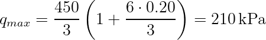
Lettura tecnica. Le tre verifiche non sono intercambiabili. Un muro può avere un buon margine a ribaltamento e restare critico per pressioni di contatto o scorrimento. Un articolo di riferimento deve mostrare come si passa dalla spinta alla risultante, dalla risultante alle pressioni e dalle pressioni alla verifica. Solo così il lettore può ricostruire il ragionamento.
Dal terreno alla risultante. Nel muro di sostegno il percorso tecnico parte dalla spinta del terreno e arriva alle pressioni di contatto alla base. Ogni passaggio deve essere esplicito: coefficiente di spinta, diagramma delle pressioni, risultante, braccio, momento ribaltante, peso stabilizzante, eccentricità e verifica della fondazione.
Separare terreno e acqua. La pressione neutra non è una variante della spinta efficace: è un'azione idraulica distinta. In presenza di falda, la pressione totale orizzontale può essere letta come somma di contributo efficace e contributo idraulico:
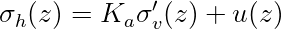
Questa separazione è importante perché il terreno offre resistenza tramite tensioni efficaci, mentre l'acqua aggiunge spinta senza contribuire alla resistenza al taglio.
Eccentricità e distribuzione delle pressioni. Il controllo della base non si esaurisce nella risultante verticale. Il momento sposta la risultante e genera eccentricità :
Se (|e|\le B/6), la distribuzione resta compressa su tutta la base. Se la risultante esce dal nucleo centrale, il modello lineare su tutta la larghezza non è più valido e bisogna usare una distribuzione parziale.
Esempio esteso. Con (N=500\,\mathrm{kN/m}), (M=110\,\mathrm{kNm/m}), (B=3.2\,\mathrm{m}), si ha:
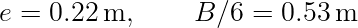
La risultante resta nel nucleo centrale. Le pressioni sono:
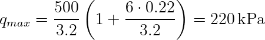
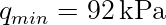
Il valore (q_{max}) va confrontato con la resistenza di progetto del terreno, non con una pressione media generica.
Scrittura da riferimento tecnico. Un testo tecnico sul muro deve far vedere l'intera catena dell'equilibrio. Solo così il lettore capisce se il margine deriva dal peso del muro, dalla larghezza della base, dalla riduzione della spinta o dalla capacità del terreno.
Tre verifiche, tre modi di crisi. Ribaltamento, scorrimento e portanza non sono tre modi diversi di dire "stabilita". Sono tre meccanismi distinti. Il ribaltamento controlla la rotazione globale attorno al bordo di valle; lo scorrimento controlla la traslazione lungo il piano di posa; la portanza controlla la capacita del terreno di sostenere la distribuzione delle pressioni. Un muro puo risultare soddisfacente per un meccanismo e critico per un altro.
La verifica a ribaltamento si legge confrontando momenti stabilizzanti e momenti ribaltanti:
La verifica a scorrimento confronta resistenza tangenziale disponibile e azione orizzontale:
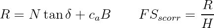
dove  e l'angolo di attrito alla base e
e l'angolo di attrito alla base e
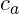
l'eventuale adesione. In progettazione agli stati limite, questi rapporti vanno sostituiti o affiancati dalle verifiche con coefficienti parziali, ma restano utili per spiegare la meccanica del problema.Pressioni di contatto e portanza. La portanza non si verifica con il solo carico verticale medio. La spinta del terreno produce eccentricita e quindi una distribuzione non uniforme delle pressioni. Se
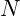
e la risultante verticale e il momento rispetto al baricentro della base:
il momento rispetto al baricentro della base:
Per
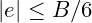
, la distribuzione lineare su tutta la base e:Il confronto rilevante e:
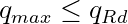
Se $q_{min}<0$, una parte della base e in trazione teorica e quindi non puo essere considerata reagente. Si passa allora a una base efficace compressa, con pressione triangolare o trapezia limitata alla zona di contatto.
Esempio numerico completo. Si consideri un muro con  ,
,  , momento destabilizzante netto
, momento destabilizzante netto  e azione orizzontale
e azione orizzontale
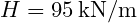
. L'eccentricita e: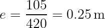
Poiche  , la base resta interamente compressa. Le pressioni sono:
, la base resta interamente compressa. Le pressioni sono:
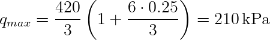
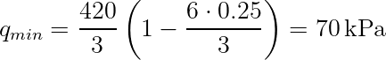
Per lo scorrimento, assumendo  e trascurando adesione, si ha
e trascurando adesione, si ha
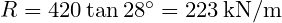
, quindi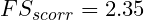
. Il risultato sembra ampio, ma deve essere letto insieme alla portanza e alle combinazioni di progetto. In presenza di sisma, falda o sovraccarichi,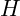
, e cambiano contemporaneamente.
Per queste verifiche i riferimenti sono D.M. 17 gennaio 2018, Capitolo 6, Circolare C.S.LL.PP. 21 gennaio 2019 n. 7 e UNI EN 1997-1:2013. In condizioni sismiche occorre richiamare anche D.M. 17 gennaio 2018, Capitolo 7, e UNI EN 1998-5:2005 quando applicabile.
Controllo dimensionale. Un riferimento tecnico deve permettere al lettore di controllare gli ordini di grandezza. Ogni risultato numerico dovrebbe essere accompagnato da un controllo dimensionale, da una interpretazione fisica e da una indicazione del parametro dominante. Se una formula restituisce un valore in  ,
,  ,
,  o
o  , l'unita deve essere esplicita e coerente con le grandezze inserite.
, l'unita deve essere esplicita e coerente con le grandezze inserite.
La forma generale di una verifica puo essere letta come:

dove  e l'effetto dell'azione di progetto e
e l'effetto dell'azione di progetto e  la resistenza di progetto. Questa scrittura, comune a molti problemi strutturali e geotecnici, aiuta a separare domanda, capacita e margine.
la resistenza di progetto. Questa scrittura, comune a molti problemi strutturali e geotecnici, aiuta a separare domanda, capacita e margine.
Dal calcolo alla decisione. Il valore finale non basta. Bisogna chiedersi da quale ipotesi dipende, quanto e sensibile ai parametri e quale meccanismo fisico rappresenta. Un margine ottenuto con parametri poco tracciabili ha meno valore di un margine piu modesto ma ben documentato. Per questo, quando si cita una norma o un criterio di combinazione, il riferimento deve essere scritto in modo esplicito e verificabile.
Controllo dimensionale. Un riferimento tecnico deve permettere al lettore di controllare gli ordini di grandezza. Ogni risultato numerico dovrebbe essere accompagnato da un controllo dimensionale, da una interpretazione fisica e da una indicazione del parametro dominante. Se una formula restituisce un valore in , , o , l'unita deve essere esplicita e coerente con le grandezze inserite.
La forma generale di una verifica puo essere letta come:
dove e l'effetto dell'azione di progetto e la resistenza di progetto. Questa scrittura, comune a molti problemi strutturali e geotecnici, aiuta a separare domanda, capacita e margine.
Dal calcolo alla decisione. Il valore finale non basta. Bisogna chiedersi da quale ipotesi dipende, quanto e sensibile ai parametri e quale meccanismo fisico rappresenta. Un margine ottenuto con parametri poco tracciabili ha meno valore di un margine piu modesto ma ben documentato. Per questo, quando si cita una norma o un criterio di combinazione, il riferimento deve essere scritto in modo esplicito e verificabile.
Riferimenti normativi e bibliografici utilizzati:
- D.M. 17 gennaio 2018, "Aggiornamento delle Norme tecniche per le costruzioni", Ministero delle Infrastrutture e dei Trasporti, Supplemento ordinario alla Gazzetta Ufficiale n. 42 del 20 febbraio 2018.
- Circolare C.S.LL.PP. 21 gennaio 2019, n. 7, "Istruzioni per l'applicazione dell'Aggiornamento delle Norme tecniche per le costruzioni di cui al decreto ministeriale 17 gennaio 2018".
- UNI EN 1990:2006, Eurocodice - Criteri generali di progettazione strutturale.
- UNI EN 1991-2:2005, Eurocodice 1 - Azioni sulle strutture - Parte 2: Carichi da traffico sui ponti.
- UNI EN 1992-1-1:2015, Eurocodice 2 - Progettazione delle strutture di calcestruzzo.
- UNI EN 1993-1-1:2014, Eurocodice 3 - Progettazione delle strutture di acciaio.
- UNI EN 1994-2:2006, Eurocodice 4 - Progettazione delle strutture composte acciaio-calcestruzzo - Ponti.
- UNI EN 1997-1:2013, Eurocodice 7 - Progettazione geotecnica - Parte 1: Regole generali.
- UNI EN 1998-2:2011, Eurocodice 8 - Progettazione delle strutture per la resistenza sismica - Ponti.